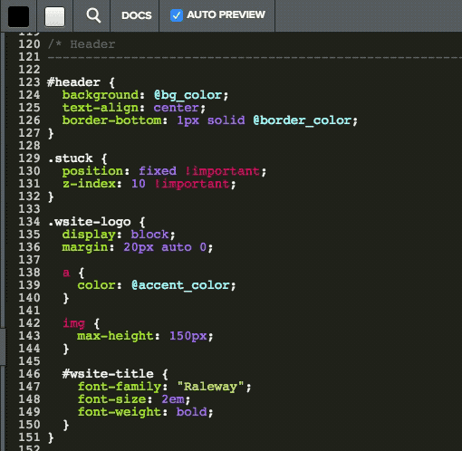
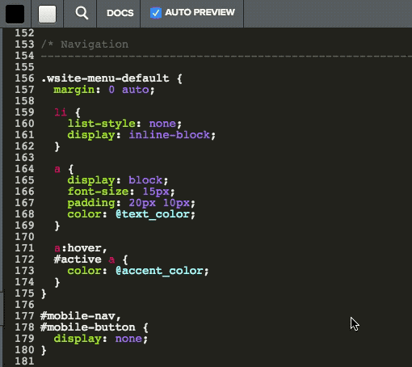
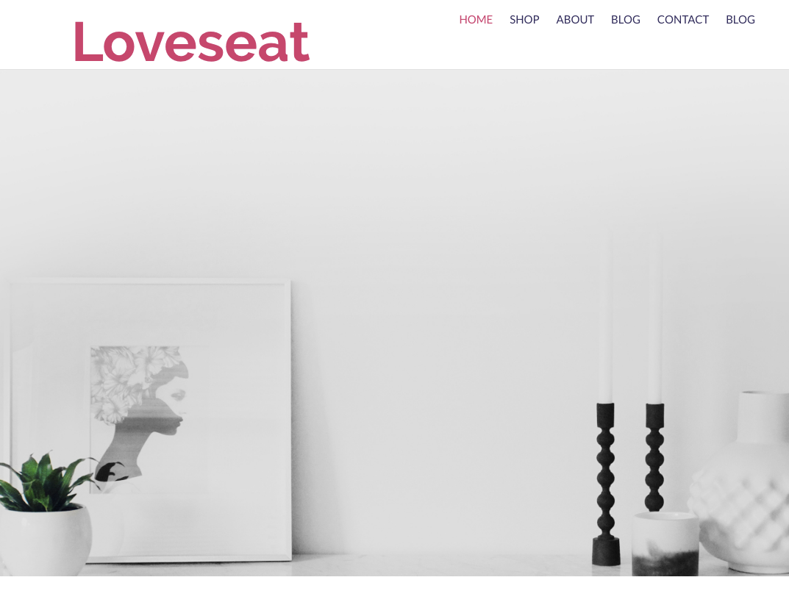

<!DOCTYPE html>
<head>
    <meta charset="utf-8">
<meta http-equiv="X-UA-Compatible" content="IE=edge">
<meta name="viewport" content="width=device-width, initial-scale=1">
<meta name="description" content="">
<meta name="keywords" content=",  ">
<title>6. Edit the main.less File | Weebly Cloud for Designers Documentation</title>
<link rel="stylesheet" href="css/syntax.css">


<link rel="stylesheet" type="text/css" href="https://maxcdn.bootstrapcdn.com/font-awesome/4.5.0/css/font-awesome.min.css">
<link rel="stylesheet" type="text/css" href="css/bootstrap.min.css">
<link rel="stylesheet" href="https://maxcdn.bootstrapcdn.com/bootstrap/3.3.2/css/bootstrap.min.css">
<link rel="stylesheet" href="css/modern-business.css">
<link rel="stylesheet" href="css/lavish-bootstrap.css">
<link rel="stylesheet" href="css/customstyles.css">
<link rel="stylesheet" href="css/theme-blue.css">


<script src="https://maxcdn.bootstrapcdn.com/bootstrap/3.3.2/js/bootstrap.min.js"></script>
<script src="https://ajax.googleapis.com/ajax/libs/jquery/1.11.2/jquery.min.js"></script>


<script src="https://cdnjs.cloudflare.com/ajax/libs/jquery/2.1.4/jquery.min.js"></script>
<script src="https://cdnjs.cloudflare.com/ajax/libs/jquery-cookie/1.4.1/jquery.cookie.min.js"></script>
<script src="js/jquery.navgoco.min.js"></script>


<script src="https://maxcdn.bootstrapcdn.com/bootstrap/3.3.4/js/bootstrap.min.js"></script>
<script src="https://cdnjs.cloudflare.com/ajax/libs/anchor-js/2.0.0/anchor.min.js"></script>
<script src="js/toc.js"></script>
<script src="js/customscripts.js"></script>

<link rel="shortcut icon" href="images/favicon.ico">

<!-- HTML5 Shim and Respond.js IE8 support of HTML5 elements and media queries -->
<!-- WARNING: Respond.js doesn't work if you view the page via file:// -->
<!--[if lt IE 9]>
<script src="https://oss.maxcdn.com/libs/html5shiv/3.7.0/html5shiv.js"></script>
<script src="https://oss.maxcdn.com/libs/respond.js/1.4.2/respond.min.js"></script>
<![endif]-->

<!-- <link rel="alternate" type="application/rss+xml" title="" href="http://localhost:4008feed.xml"> -->

<script type="text/javascript">
    $(document).ready(function() {

        /*Bootstrap popovers are initialized with the following script. In the options, I'm setting the placement to be on the right, the trigger to be hover rather than click, and to allow HTML from the JSON data source. */

        $('[data-toggle="popover"]').popover({
            placement: 'top',
            trigger: 'hover',
            html: true
        });
    })
</script>
    <script>
        $(document).ready(function() {
            // Initialize navgoco with default options
            $("#mysidebar").navgoco({
                caretHtml: '',
                accordion: true,
                openClass: 'active', // open
                save: false, // leave false or nav highlighting doesn't work right
                cookie: {
                    name: 'navgoco',
                    expires: false,
                    path: '/'
                },
                slide: {
                    duration: 400,
                    easing: 'swing'
                }
            });

            $("#collapseAll").click(function(e) {
                e.preventDefault();
                $("#mysidebar").navgoco('toggle', false);
            });

            $("#expandAll").click(function(e) {
                e.preventDefault();
                $("#mysidebar").navgoco('toggle', true);
            });

        });

    </script>
    <script>
        $(function () {
            $('[data-toggle="tooltip"]').tooltip()
        })
    </script>
    

</head>
<body>
<!-- Navigation -->
<nav class="navbar navbar-inverse navbar-fixed-top">
    <div class="container topnavlinks">
        <div class="navbar-header">
            <button type="button" class="navbar-toggle" data-toggle="collapse" data-target="#bs-example-navbar-collapse-1">
                <span class="sr-only">Toggle navigation</span>
                <span class="icon-bar"></span>
                <span class="icon-bar"></span>
                <span class="icon-bar"></span>
            </button>

            <a class="fa fa-home fa-lg navbar-brand" href="home.html">&nbsp;<span class="projectTitle">
                Weebly Cloud for Designers</span></a>
        </div>
        <div class="collapse navbar-collapse" id="bs-example-navbar-collapse-1">
            <ul class="nav navbar-nav navbar-right">
                <!-- entries without drop-downs appear here -->
                
                
                
                <li><a href="home.html">Get Started</a></li>
                
                
                
                <li><a href="ds_apps_gs.html">Custom Apps</a></li>
                
                
                
                <li><a href="ds_themes_start.html">Custom Themes</a></li>
                
                
                
                <li><a href="ds_apis_about.html">Cloud APIs</a></li>
                
                
                
                <li><a href="ds_tags_about.html">Tags</a></li>
                
                
                
                <!-- entries with drop-downs appear here -->
                <!-- conditional logic to control which topnav appears for the audience defined in the configuration file.-->
                
                
			<li>


  <a class="email" title="Submit feedback" href="#" onclick="javascript:window.location='mailto:rwhitmore@weebly.com?subject=Weebly Cloud for Designers Docs feedback&body=I have some feedback about the 6. Edit the main.less File page: ' + window.location.href;"><i class="fa fa-envelope-o"></i> Feedback</a>

</li>

		
                <!--comment out this block if you want to hide search-->
                <li>
                    <!--start search-->
                    <div id="search-demo-container">
                        <input type="text" id="search-input" placeholder="Search...">
                        <ul id="results-container"></ul>
                    </div>
                    <script src="js/jekyll-search.js" type="text/javascript"></script>
                    <script type="text/javascript">
                            SimpleJekyllSearch.init({
                                searchInput: document.getElementById('search-input'),
                                resultsContainer: document.getElementById('results-container'),
                                dataSource: 'search.json',
                                searchResultTemplate: '<li><a href="{url}" title="6. Edit the main.less File">{title}</a></li>',
                    noResultsText: 'No results',
                            limit: 10,
                            fuzzy: true,
                    })
                    </script>
                    <!--end search-->
                </li>
            </ul>
        </div>
        </div>
        <!-- /.container -->
</nav>

<!-- Page Content -->
<div class="container">
    <div class="col-lg-12">&nbsp;</div>
    <!-- Content Row -->
    <div class="row">
        <!-- Sidebar Column -->
        <div class="col-md-3">

          


<ul id="mysidebar" class="nav">
    <li class="sidebarTitle">Develop Weebly Themes </li>
    
    
    
        
    
    <li>
        <a href="#">Get Started with Customizing Themes</a>
        <ul>
            
            
            
            <li><a href="ds_themes_start.html">Customizing Themes</a></li>
            
            
            
            
            
            
            <li><a href="ds_themes_sample.html">Download Sample Themes</a></li>
            
            
            
            
            
            
            <li><a href="ds_themes_anatomy.html">Anatomy of a Theme</a></li>
            
            
            
            
            
            
            <li><a href="ds_themes_directory.html">Theme Directory Structure</a></li>
            
            
            
            
            
            
            <li><a href="ds_themes_issues.html">Known Issues</a></li>
            
            
            
            
        </ul>
        
        
    
    <li>
        <a href="#">Tutorial&#58; Customize a Theme</a>
        <ul>
            
            
            
            <li><a href="ds_themes_tutorial.html">Customize a Weebly Theme</a></li>
            
            
            
            
            
            
            <li><a href="ds_themes_1.html">1. Download the Base Theme</a></li>
            
            
            
            
            
            
            <li><a href="ds_themes_2.html">2. Apply YOur Theme to a Test Site</a></li>
            
            
            
            
            
            
            <li><a href="ds_themes_3.html">3. Add a Color Palette</a></li>
            
            
            
            
            
            
            <li><a href="ds_themes_4.html">4. Create Variations of the Theme</a></li>
            
            
            
            
            
            
            <li><a href="ds_themes_5.html">5. Edit the Header Template</a></li>
            
            
            
            
            
            
            <li class="active"><a href="ds_themes_6.html">6. Edit the main.less File</a></li>
            
            
            
            
            
            
            <li><a href="ds_themes_7.html">7. Edit the Blog Post Partial</a></li>
            
            
            
            
            
            
            <li><a href="ds_themes_8.html">8. Add a Theme Option</a></li>
            
            
            
            
            
            
            <li><a href="ds_themes_9.html">9. Add a Screenshot</a></li>
            
            
            
            
            
            
            <li><a href="ds_themes_10.html">10. Deliver Your Theme</a></li>
            
            
            
            
            
            
            <li><a href="ds_themes_finish.html">Finish</a></li>
            
            
            
            
        </ul>
        
        
    
    <li>
        <a href="#">Theme Design</a>
        <ul>
            
            
            
            <li><a href="ds_themes_guidelines.html">Theme Design Guidelines</a></li>
            
            
            
            
            
            
            <li><a href="ds_themes_page.html">Page Guidelines for Themes</a></li>
            
            
            
            
            
            
            <li><a href="ds_themes_element_guidelines.html">Element Guidelines for Themes</a></li>
            
            
            
            
        </ul>
        
        
    
    <li>
        <a href="#">Create a Theme</a>
        <ul>
            
            
            
            <li><a href="ds_themes_create.html">How to Create a Theme</a></li>
            
            
            
            
            
            
            <li><a href="ds_themes_import_export.html">Import and Export Themes</a></li>
            
            
            
            
            
            
            <li><a href="ds_themes_implement_css.html">Implement the CSS</a></li>
            
            
            
            
            
            
            <li><a href="ds_themes_create_templates.html">Create HTML Layout Templates</a></li>
            
            
            
            
            
            
            <li><a href="ds_themes_partials.html">Use Partials</a></li>
            
            
            
            
            
            
            <li><a href="ds_themes_manifest.html">Create the Theme Manifest</a></li>
            
            
            
            
            
            
            <li><a href="ds_themes_options.html">Add Options to Your Themes</a></li>
            
            
            
            
            
            
            <li><a href="ds_themes_palette.html">Create a Color Palette</a></li>
            
            
            
            
            
            
            <li><a href="ds_themes_variations.html">Add Color Variations</a></li>
            
            
            
            
            
            
            <li><a href="ds_themes_screenshot.html">Create a Theme Screenshot</a></li>
            
            
            
            
            
            
            <li><a href="ds_themes_deliver.html">Deliver Your Theme</a></li>
            
            
            
            
            
            
            <li><a href="ds_themes_update.html">Update Your Theme</a></li>
            
            
            
            
        </ul>
        
        
    
    <li>
        <a href="#">Theme Resources</a>
        <ul>
            
            
            
            <li><a href="ds_themes_design_resources.html">Design Resources</a></li>
            
            
            
            
            
            
            <li><a href="ds_themes_LESS.html">About LESS</a></li>
            
            
            
            
            
            
            <li><a href="ds_themes_mustache.html">About Mustache</a></li>
            
            
            
            
        </ul>
        
        
    
    <li>
        <a href="#">Partial Maps</a>
        <ul>
            
            
            
            <li><a href="ds_themes_blogPartials.html">Blog Partials</a></li>
            
            
            
            
            
            
            <li><a href="ds_themes_comPartials.html">Commerce Partials</a></li>
            
            
            
            
            
            
            <li><a href="ds_themes_membershipPartials.html">Membership Partials</a></li>
            
            
            
            
            
            
            <li><a href="ds_themes_navPartials.html">Navigation Partials</a></li>
            
            
            
            
            
            
            <li><a href="ds_themes_searchPartials.html">Search Partials</a></li>
            
            
            
            
        </ul>
        
        
    
    <li>
        <a href="#">Theme FAQs</a>
        <ul>
            
            
            
            <li><a href="ds_themes_faqs.html">Theme FAQs</a></li>
            
            
            
            
        </ul>
        
        
        
        <!-- if you aren't using the accordion, uncomment this block:
           <p class="external">
               <a href="#" id="collapseAll">Collapse All</a> | <a href="#" id="expandAll">Expand All</a>
           </p>
           -->
    </li>
</ul>
</div>

<!-- this highlights the active parent class in the navgoco sidebar. this is critical so that the parent expands when you're viewing a page. This must appear below the sidebar code above. Otherwise, if placed inside customscripts.js, the script runs before the sidebar code runs and the class never gets inserted.-->
<script>$("li.active").parents('li').toggleClass("active");</script>

    <!-- Content Column -->
    <div class="col-md-9">
        <div class="post-header">
   <h1 class="post-title-main">6. Edit the main.less File</h1>
</div>


<div class="post-content">

   <div class="seriesContext">
    <div class="btn-group">
        <button type="button" data-toggle="dropdown" class="btn btn-primary dropdown-toggle">Theme Tutorial<span class="caret"></span></button>
        <ol class="dropdown-menu">
            
            
            
            
            
            
            
            
            
            
            
            
            
            
            
            
            
            
            
            
            
            
            
            
            
            
            
            
            
            
            
            
            
            
            
            
            
            
            
            
            
            
            
            
            
            
            
            
            
            
            
            
            
            
            
            
            
            
            
            
            
            
            
            
            
            
            
            
            
            
            
            
            
            
            
            
            
            
            
            
            
            
            
            
            
            
            
            
            
            
            
            
            
            
            
            
            
            
            
            
            
            
            
            
            
            
            
            
            
            
            
            
            
            
            
            
            
            
            
            
            
            
            
            
            
            
            
            
            
            
            
            
            
            
            
            
            
            
            
            
            
            
            
            
            
            
            
            
            
            
            
            
            
            
            
            
            
            
            
            
            
            
            
            
            
            
            
            
            
            
            
            
            
            
            
            
            
            
            
            
            
            
            
            
            
            
            
            
            
            
            
            
            
            
            
            
            
            
            
            
            <li>
                <a href="ds_themes_1.html"><!--1.--> 1. Download the Base Theme</a>
            </li>
            
            
            
            
            
            
            
            <li>
                <a href="ds_themes_2.html"><!--2.--> 2. Apply Your Theme to a Test Site</a>
            </li>
            
            
            
            
            
            
            
            <li>
                <a href="ds_themes_3.html"><!--3.--> 3. Add a Color Palette</a>
            </li>
            
            
            
            
            
            
            
            
            
            <li>
                <a href="ds_themes_4.html"><!--4.--> 4. Create Variations</a>
            </li>
            
            
            
            
            
            
            
            <li>
                <a href="ds_themes_5.html"><!--5.--> 5. Edit the Header Template</a>
            </li>
            
            
            
            
            
            <li class="active"> → <!--6.--> 6. Edit the main.less File</li>
            
            
            
            
            
            
            
            <li>
                <a href="ds_themes_7.html"><!--7.--> 7. Edit the Blog Post Partial</a>
            </li>
            
            
            
            
            
            
            
            
            
            <li>
                <a href="ds_themes_8.html"><!--8.--> 8. Add a Theme Option</a>
            </li>
            
            
            
            
            
            <li>
                <a href="ds_themes_9.html"><!--9.--> 9. Add a Screenshot</a>
            </li>
            
            
            
            
            
            
            
            
            
            <li>
                <a href="ds_themes_10.html"><!--10.--> 10. Deliver Your Theme</a>
            </li>
            
            
            
            
            
            <li>
                <a href="ds_themes_finish.html"><!--11.--> You Did It!</a>
            </li>
            
            
            
        </ol>
    </div>
</div>


    

  <p>Let’s style the title and menu.​ We’ll use the accent color we added for the title and menu. And we’ll also use the <code class="highlighter-rouge">float</code> CSS property to move the title and menu.</p>

<ol>
  <li>
    <p>If you’re not in the Code Editor, from the <strong>Theme</strong> tab, click <strong>Edit HTML/CSS</strong>.</p>
  </li>
  <li>Under the <strong>Styles</strong> area, click <code class="highlighter-rouge">main.less</code> to open it.​
​</li>
  <li>Scroll down to the <strong>Header</strong> area to find the <code class="highlighter-rouge">.wsite-logo</code> class. You’ll notice that there is styling for the link color (logos by default are a link to the home page), an image height (for when a user uploads a logo graphic to use instead of the title text), and styling for the title text. The link style uses the accent color we created:</li>
</ol>

<figure class="highlight"><pre><code class="language-css" data-lang="css"><span class="err"></span><span class="nc">.wsite-logo</span> <span class="p">{</span>
    <span class="nl">display</span><span class="p">:</span> <span class="nb">block</span><span class="p">;</span>
    <span class="nl">margin</span><span class="p">:</span> <span class="m">20px</span> <span class="nb">auto</span> <span class="m">0</span><span class="p">;</span>

    <span class="err">a</span> <span class="err">{</span>
        <span class="nl">color</span><span class="p">:</span> <span class="err">@</span><span class="n">accent_color</span><span class="p">;</span>
    <span class="p">}</span>

    <span class="nt">img</span> <span class="p">{</span>
        <span class="nl">max-height</span><span class="p">:</span> <span class="m">150px</span><span class="p">;</span>
    <span class="p">}</span>

    <span class="nf">#wsite-title</span> <span class="p">{</span>
        <span class="nl">font-family</span><span class="p">:</span> <span class="s1">"Raleway"</span><span class="p">;</span>
        <span class="nl">font-size</span><span class="p">:</span> <span class="m">2em</span><span class="p">;</span>
        <span class="nl">font-weight</span><span class="p">:</span> <span class="nb">bold</span><span class="p">;</span>
    <span class="p">}</span>
<span class="err">}</span></code></pre></figure>

<p>Let’s float the entire logo area to the left. Let’s also make the title bigger. ​​
    For the <code class="highlighter-rouge">.wsite-logo</code> class, add a <code class="highlighter-rouge">float</code> property and set it to <code class="highlighter-rouge">left</code>.
    For the <code class="highlighter-rouge">#wsite-title</code> element, change the <code class="highlighter-rouge">font-size</code> property to <code class="highlighter-rouge">5em</code>.</p>

<p></p>
<figure class="highlight"><pre><code class="language-css" data-lang="css"><span class="nc">.wsite-logo</span> <span class="p">{</span>
    <span class="nl">display</span><span class="p">:</span> <span class="nb">block</span><span class="p">;</span>
    <span class="nl">margin</span><span class="p">:</span> <span class="m">20px</span> <span class="nb">auto</span> <span class="m">0</span><span class="p">;</span>
    <span class="nl">float</span><span class="p">:</span> <span class="nb">left</span><span class="p">;</span>

    <span class="err">a</span> <span class="err">{</span>
        <span class="nl">color</span><span class="p">:</span> <span class="err">@</span><span class="n">accent_color</span><span class="p">;</span>
    <span class="p">}</span>

    <span class="nt">img</span> <span class="p">{</span>
        <span class="nl">max-height</span><span class="p">:</span> <span class="m">150px</span><span class="p">;</span>
    <span class="p">}</span>

    <span class="nf">#wsite-title</span> <span class="p">{</span>
        <span class="nl">font-family</span><span class="p">:</span> <span class="s1">"Raleway"</span><span class="p">;</span>
        <span class="nl">font-size</span><span class="p">:</span> <span class="m">5em</span><span class="p">;</span>
        <span class="nl">font-weight</span><span class="p">:</span> <span class="nb">bold</span><span class="p">;</span>
    <span class="p">}</span>
<span class="err">}</span></code></pre></figure>

<figure><figcaption>Change the styles pf title to use our accent color and change the size to be larger</figcaption></figure>

<ol start="4">
  <li>Now let’s float the menu to the right. Scroll down to the <strong>Navigation</strong> area until you find the <code class="highlighter-rouge">.wsite-menu-default</code> class. Like the <code class="highlighter-rouge">.wsite-logo</code> class, this menu class includes styles for multiple aspects of the menu, including active and hover link styles, font styles and padding. Since the link color uses the <code class="highlighter-rouge">@text_color</code> variable, it will use the primary color set by the user (remember we set the <code class="highlighter-rouge">@text_color</code> variable to use the <code class="highlighter-rouge">@site-primary-color</code> variable in <a href="ds_themes_5.html">Step 5</a>). And the link hover style will use the accent color.</li>
</ol>

<p></p>
<figure class="highlight"><pre><code class="language-css" data-lang="css"><span class="nc">.wsite-menu-default</span> <span class="p">{</span>
    <span class="nl">margin</span><span class="p">:</span> <span class="m">0</span> <span class="nb">auto</span><span class="p">;</span>

    <span class="err">li</span> <span class="err">{</span>
        <span class="nl">list-style</span><span class="p">:</span> <span class="nb">none</span><span class="p">;</span>
        <span class="nl">display</span><span class="p">:</span> <span class="n">inline-block</span><span class="p">;</span>
    <span class="p">}</span>

    <span class="nt">a</span> <span class="p">{</span>
        <span class="nl">display</span><span class="p">:</span> <span class="nb">block</span><span class="p">;</span>
        <span class="nl">font-size</span><span class="p">:</span> <span class="m">15px</span><span class="p">;</span>
        <span class="nl">padding</span><span class="p">:</span> <span class="m">20px</span> <span class="m">10px</span><span class="p">;</span>
        <span class="nl">color</span><span class="p">:</span> <span class="err">@</span><span class="n">text_color</span><span class="p">;</span>
    <span class="p">}</span>

    <span class="nt">a</span><span class="nd">:hover</span><span class="o">,</span>
    <span class="nf">#active</span> <span class="nt">a</span> <span class="p">{</span>
        <span class="nl">color</span><span class="p">:</span> <span class="err">@</span><span class="n">accent_color</span><span class="p">;</span>
    <span class="p">}</span>
<span class="err">}</span></code></pre></figure>

<p>Let’s float the menu to the right by adding the <code class="highlighter-rouge">float</code> property, and change the text so that it’s all uppercase by adding the <code class="highlighter-rouge">text-transform</code> property.</p>

<p></p>
<figure class="highlight"><pre><code class="language-css" data-lang="css"><span class="nc">.wsite-menu-default</span> <span class="p">{</span>
    <span class="nl">margin</span><span class="p">:</span> <span class="m">0</span> <span class="nb">auto</span><span class="p">;</span>
    <span class="nl">float</span><span class="p">:</span> <span class="nb">right</span><span class="p">;</span>

    <span class="err">li</span> <span class="err">{</span>
        <span class="nl">list-style</span><span class="p">:</span> <span class="nb">none</span><span class="p">;</span>
        <span class="nl">display</span><span class="p">:</span> <span class="n">inline-block</span><span class="p">;</span>
    <span class="p">}</span>

    <span class="nt">a</span> <span class="p">{</span>
        <span class="nl">display</span><span class="p">:</span> <span class="nb">block</span><span class="p">;</span>
        <span class="nl">font-size</span><span class="p">:</span> <span class="m">15px</span><span class="p">;</span>
        <span class="nl">padding</span><span class="p">:</span> <span class="m">20px</span> <span class="m">10px</span><span class="p">;</span>
        <span class="nl">color</span><span class="p">:</span> <span class="err">@</span><span class="n">text_color</span><span class="p">;</span>
        <span class="nl">text-transform</span><span class="p">:</span> <span class="nb">uppercase</span><span class="p">;</span>
    <span class="p">}</span>

    <span class="nt">a</span><span class="nd">:hover</span><span class="o">,</span>
    <span class="nf">#active</span> <span class="nt">a</span> <span class="p">{</span>
        <span class="nl">color</span><span class="p">:</span> <span class="err">@</span><span class="n">accent_color</span><span class="p">;</span>
    <span class="p">}</span>
<span class="err">}</span></code></pre></figure>

<figure><figcaption>Float the menu to the right and change the text to uppercase</figcaption></figure>

<ol start="5">
  <li>Click <strong>Save</strong>.</li>
</ol>

<p>The layout of the header has changed. If the title doesn’t seem to be lining up correctly, it’s because the editor window is too small.
​</p>
<figure><figcaption>Changed header layout</figcaption></figure>

<p>Ok! We’re done changing the styling of the header template. Pages using the <code class="highlighter-rouge">Header</code> template reflect the changes we made. Now let’s change how blog pages look.</p>

<h3 id="what-just-happened">What Just Happened?</h3>
<p>You edited the <code class="highlighter-rouge">main.less</code> stylesheet and used CSS properties to change the display of the title and the menu.</p>


<div class="next">
<p>
    
    
    
    
    
    
    
    
    
    
    
    
    
    
    
    
    
    
    
    
    
    
    
    
    
    
    
    
    
    
    
    
    
    
    
    
    
    
    
    
    
    
    
    
    
    
    
    
    
    
    
    
    
    
    
    
    
    
    
    
    
    
    
    
    
    
    
    
    
    
    
    
    
    
    
    
    
    
    
    
    
    
    
    
    
    
    
    
    
    
    
    
    
    
    
    
    
    
    
    
    
    
    
    
    
    
    
    
    
    
    
    
    
    
    
    
    
    
    
    
    
    
    
    
    
    
    
    
    
    
    
    
    
    
    
    
    
    
    
    
    
    
    
    
    
    
    
    
    
    
    
    
    
    
    
    
    
    
    
    
    
    
    
    
    
    
    
    
    
    
    
    
    
    
    
    
    
    
    
    
    
    
    
    
    
    
    
    
    
    
    
    
    
    
    
    
    
    
    
    
    
    
    
    
    
    
    
    
    
    
    
    
    
    
    
    
    
    
    
    
    
    
    
    
    
    
    
    
    
    
    
    
    
    
    
    
    
    
    
    <a href="ds_themes_5.html"><button type="button" class="btn btn-primary">Previous: <!--5.-->  5. Edit the Header Template</button></a>
    
    
    
    
    
    
    
    
    
    
    
    
    
    
    
    
    
    
    <a href="ds_themes_7.html"><button type="button" class="btn btn-primary">Next: <!--7.-->  7. Edit the Blog Post Partial</button></a>
    
    
    
    
    
    
    
    
    
    
    
    
    
    
    
    
    
    
    
    
    
    
    
    
    
    
    
    
    
    
    
    
    
    
    
    
    
    
    
</p>

</div>

    <div class="tags">
        
        <b>Tags: </b>
        
        
        
    </div>

    


</div>

<hr class="shaded"/>

<footer>
            <div class="row">
                <div class="col-lg-12 footer">
               &copy;2017 Weebly. All rights reserved. <br />
 Site last generated: Oct 10, 2017 <br />
<p></p>
                </div>
            </div>
</footer>


    </div>
    <!-- /.row -->
</div>
<!-- /.container -->
    </div>

</body>

</html>